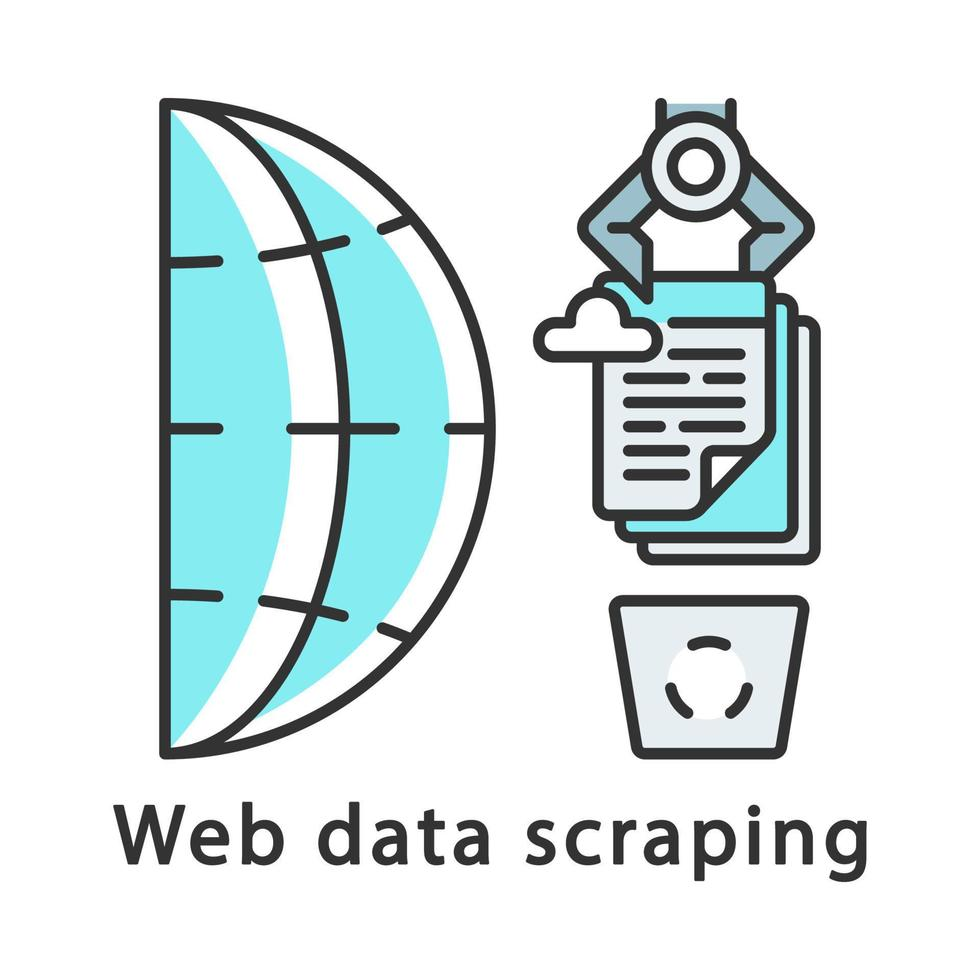

Skills

SQL & Database Design
Normalized databases (1NF to 3NF), complex queries, integrated with R.

R Programming
Data analysis with ggplot2, plotly, and SQL connection using RSQLite.
Data Cleaning
Handled missing values, cleaned and transformed messy datasets.

Data Storytelling
Explained insights using visuals and narrative techniques for stakeholders.

Data Visualization
Communicated patterns using ggplot2, plotly, visdat.

Excel / Advanced Excel
Used pivot tables and formulas for analytics and data prep.

Web Scraping
Scraped structured data from council websites using Python.

Web Development
Built full-stack PHP/MySQL systems with user authentication and forms.
Communication & Presentation
Presented insights clearly in group projects, reports, and academic work.